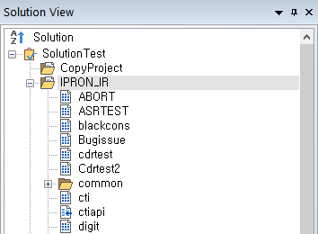
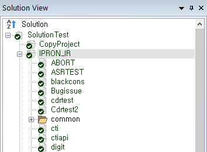
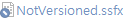
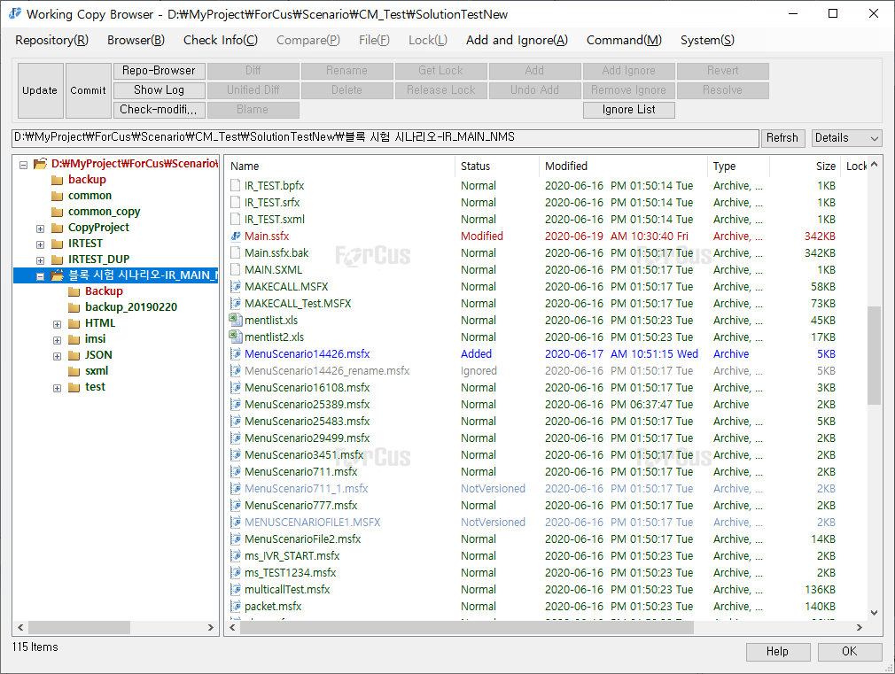

| 시나리오 형상관리 - 상태 정보 | 시작 다음 이전 |
Import가 완료되면 SCE는 주기적으로 형상관리한 로컬 솔루션 디렉토리(Working copy directory)의 파일 상태 정보를 갱신하여 개발자가 수정하거나 추가한 파일들의 상태를 표시합니다.
  [일반 상태] [형상관리 상태]
- 상태별 이미지 및 텍스트 칼라
+ : SVN 상태가 에러일 경우 또는 형상관리 중인 파일이 삭제된 경우 +  : 형상관리 파일이 아님 - Working copy 디렉토리에 새로 생성되거나 복사된 파일.+ : 형상관리 중인 파일 - Working copy 파일과 Repository 파일 내용이 변경 없이 동일함. + : 형상관리 파일이 아닌 파일을 형상관리 하기 위해 추가한 상태(Working copy) - Commit하기 전의 파일로 Repository에는 이 파일이 없음. + : 형상관리 중인 파일을 삭제한 상태(Working copy) - Commit하기 전의 파일로 Repository에는 이 파일이 있음. + : 항목이 교체된 경우(Working copy) - 파일이 교체되면 Deleted, Added 예약이 되는데 파일 이름이 같은 경우에 해당함. + : 파일이 수정 되었음(Working copy) - Commit하기 전의 파일로 Repository의 파일 내용은 수정 전임. + : Merge한 파일. + : Update, Commit, Merge등 에서 항목의 속성이 Repository에서 받은 속성과 충돌 - 주로 같은 파일을 여러 명이 편집 하고 Commit 하는 경우에 발생. + : 리본 메뉴 CM > Subversiond(SVN) > Setting 의 Global ignore pattern에 제외 파일로 설정 또는 Working copy browser의 Add Ignore 를 통해서 제외한 파일.
- Working copy browser 에서는 상태별 칼라와 Ststus 컬럼에 상태 문자를 표시 합니다.

* Working copy(로컬 솔루션 디렉토리), Repository(원격 저장소)
※ SCE 가 어떤 처리 중 일 때는 상태 갱신을 하지 않습니다. - Item Information Data 처리 중 일 때 - Auto Complete Data 처리 중 일 때 - 검색 & 치환 중 일 때 - 빌드 중 일 때 - SVN 기능 처리 중 일 때(Update, Commit, Add, Undo Add 등) - 기타 작업 중 일 때
|
| Copyrights(C) Bridgetec.co.kr. All Rights Reserved | 시작 다음 이전 |